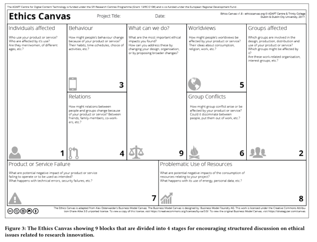

原文地址：https://blog.acolyer.org/2018/05/15/re-coding-black-mirror-part-ii/
今天我们看来自re-coding Black Mirror workshop另外几篇文章。
- 情感计算的缺陷(Pitfalls of affective computing, Cooney et al.)
- 黑镜中用户数据分析的简易性和伦理学(Ease and ethics of user profiling in Black Mirror, Pandit & Lewis)
(如果你没有ACM数字图书馆访问权限，上述的论文也可以从Morning Paper网站或者www 2018议程获取)
情感计算的缺陷
通过可穿戴设备或者遥感设备采集面部表情，手势，声音， 目前的技术是可以识别出用户的情绪的。
在当前的论文中，我们设想了这样一种未来:这种技术具有很高的准确性，并且广泛分布，因此人们的情绪通常可以被其他人看到。
显然，这会泄露人们并不想泄露的信息。由于面部微表情以及肢体语言非常难以隐藏，因此很容易就会泄露。如果人们认为没有必要说话或移动来传达情感, 它也会削弱社交技能。"善意的谎言" 可能变得不可能, 这可能会消除一个人的同情心。它还可能造成物理上的伤害:
通过消极或积极情绪快速检测威胁和机会的能力可能会增加战斗和暴力的发生率，例如，一个人可能会因为看到他们的伴侣和潜在的对手对彼此产生强烈的正面情绪而感到威胁，这可能会导致愤怒和暴力。
误读情绪，或过度简化情绪(例如将事情归结为一种情绪，而不是复杂的现实中的多种情绪的混合体)，也会导致误解。
..如果一个人对他人情绪的推断不同于他的想象，那么就会产生不和谐和不信任感。最后，一个系统可能被黑客攻击，使一个人感受到一种不同的情绪，这可能使政客、律师或罪犯受益。
当然如果有了可以读取他人情绪的计算机或者机器人，那么就可以更加容易的说服他人，从而可能获取商业上的利益。试想如果有一个针对特定人群例如老年人的骗局，通过检查老人们的情绪就可以知道他们是否上钩了（相信编造的谎言）。
作者提出了一个指导原则，即“一个人的情绪只应在他们的同意下，对值得信任的人进行可视化。”但要防范那些默默观察你的系统是很困难的。一个患有抑郁症的人不应该被迫向完全陌生的人暴露他们的情况，员工也不应该害怕因为一些情绪上的失误被监控而失去工作。
...在类似于GDPR这样的规定之下,一个人的情绪状态可以被视为个人信息，所以应该受到保护。我们相信在考虑了可能出现的问题以及如何避免之后，情绪可视化会对人类有正面的影响。
黑镜中用户数据分析的简易性和伦理学
这篇论文是基于“Nosedive”这一集，并分析了用户被广泛建立画像并深入到日常生活中的场景。(想想中国的社会信用体系吧!)考虑一个虚拟的组织F-social为其用户提供服务(免费或付费)，并设法在此过程中积累大量个人信息。
一家餐厅将顾客的面部照片发送给F-social，以得到他们拥有的购买力的衡量标准，以及他们挥霍的可能性。他们可以通过一种看似无伤大雅的通知来做这件事，他们会说，“进入你同意被识别的前提。”
F-social通过在其用户数据库中寻找匹配的面部轮廓来识别个体。如果个人不使用F-social，他们的朋友的标签照片可能仍然可以识别。如果真的没有信息，F-social就会返回“不匹配”的结果，餐馆会认为是模棱两可和可疑的。
在下一步，F-social为餐馆计算出得分，显示顾客可能的消费能力，以及他们今天挥霍的潜力。它可能通过查看过去的购买记录或者关联的财务数据来计算出这个结果。然后，F-social在资料中寻找潜在的特殊的指标-生日、周年纪念、促销等...最后，F-social考虑客户距离工资月还有多远。顾客在餐馆中收到的服务可能会因为后台的计算收到很大的影响...(注：例如滴滴价格歧视，推荐等)"This second-hand effect of limiting access or discriminating based on some metric results in a pressure to conform to accepted behaviours."
目前的规范应该考虑一项技术在大规模使用之后的影响，但是大多情况下只能在感受到风险的时候才会提出反对意见...技术人员缺乏讨论背后的核心问题是没有将道德伦理集成到工作中的好办法。
为了帮助解决这个问题，作者给我们提供了"道德模式图"，基于流行的“商业模式图”

画布有九个主题块，通常分为四个阶段.
- 利益相关者的识别。块1和块2根据所考虑的技术确定个人和团体涉众。
- 识别潜在的伦理影响。下一步是填写第3、4、5和6块，并确定潜在的道德影响(见图表中的问题)。
- 考虑对非利益相关者的道德影响(关于失败和使用资源的影响的第7和第8块)。
- 制定执行计划(第9块)
伦理画布可以打印或用作web应用程序，可以在没有帐户的情况下使用，也可以下载。某些特性，例如协作编辑、注释、标记和持久性，可以通过帐户获得。该应用程序的源代码是在线托管的，并且可以在CC-by-SA 3.0许可下使用。
让我们来看看这模型如何帮助我们分析假设的f -社交餐厅场景。
利益相关者
个人利益相关者包括F-social的任何用户，以及在F-social中被标记为F-social的任何非用户，以及该餐厅的顾客。看看F-social在幕后使用的数据集(比如信用公司的数据)，我们还可以包括那些在这些数据集中作为涉众出现的用户。
受影响的群体可以由任何不愿意被跟踪的人组成，比如寻找安全地点的记者，或者是在权力位置上的人，他们的行踪信息可能构成安全风险。任何可能在无意中被定性为劣势的少数群体也面临着风险。
对利益相关者的影响
用户可能会发现发布能提高他们的评级的正面的东西会获得更多奖励。“如果有金钱或者其他的利益的话他们也更有可能提供信息，从而使服务根据评分来分析用户。“此外，如果评分考虑用户的社交圈子，那么用户更有可能希望他们的社交圈由那些对他们的评价有积极影响的人组成。最终，评级较高的人可能会看不起那些评级较低的人(就像我们在“Nosedive”一集里看到的那样)。
例如，那些只会自动迎合高评分的人会被认为“排外”，而那些容易接受低评级的人可能被认为不是“上等人”。在一定程度上，这一现象在今天的货币消费能力上是可以观察到的。
对非利益相关者的影响
F-social数据可能被操纵，被攻击或者禁用。用户将被拒绝服务。服务可能会被某些客户用来以达到不可告人的目的。政府或者国家层面的实体可能会要求获取相关的数据。
缓和措施？
假设F-social所提供的服务是合法的且可以接受的,因此在不被关闭在此基础上,作者建议添加更多的透明度:用来计算评分的算法公开评估(如果这是一个神经网络?)提供一定程度的真实性和监督使用的数据,并帮助防止虚假信息服务传播。在这一节中，作者似乎偏离了(我对)box 9的意图(我的解释)，即它应该被F-social组织本身用来考虑自己所提供的服务，并不断的回顾。而不是关注于那些F-social可能会让用户做的不喜欢的事情。
关于画布如果想了解更多https://ethicscanvas.org/